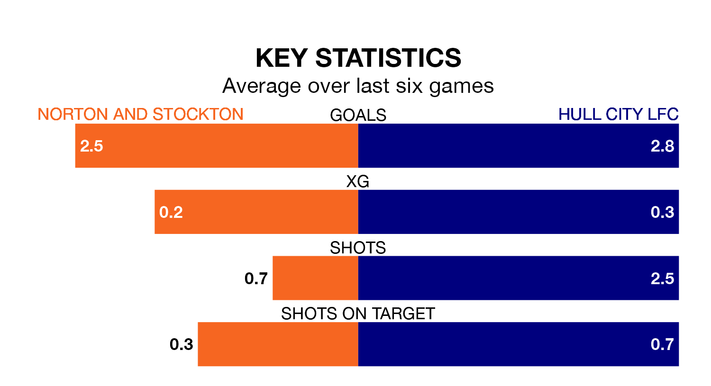

Norton and Stockton host Hull City LFC on early Sunday on the back of three consecutive wins in Women's National League Division One North.
Norton & Stockton have picked up 10 points from their last six games, and they face a Hull City side who also won their last match, and have collected 12 points from the last possible 18.
With 31 goals in 11 games so far this season, Hull City are the league's highest scorers with 2.8 goals per game. And they are conceding fewer than average, letting in 13 goals at a rate of 1.2 per game.
Norton & Stockton, meanwhile, are below average scorers, with 1.5 goals per game, compared to a league average of 1.6. They have also conceded 1.5 goals per game.
The away team are second in the table after 11 games, of which they have won eight and drawn one, earning 25 points.
The hosts are six places behind Hull City in eighth, with three wins and four draws putting them on 13 points.
In the last three years, Norton & Stockton and Hull City have played each other on three occasions. Norton & Stockton won one of them and Hull City the other.
Their last meeting was on September 17, when Hull City won 2-1 at home.
Norton & Stockton's last match was on January 14, a 5-1 win against Chorley Women.
Hull City beat Chester-le-Street Town FC Women 4-0 last time out, also on January 14.
Updated: 13:20 (UTC), 29/01/24